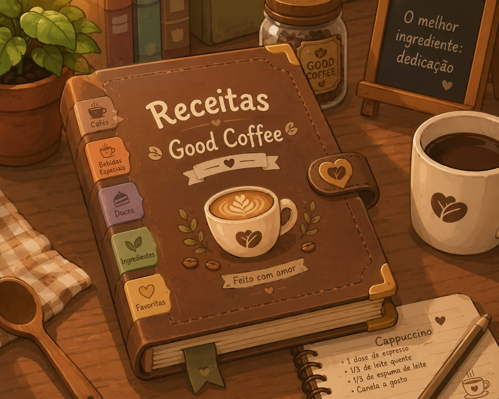
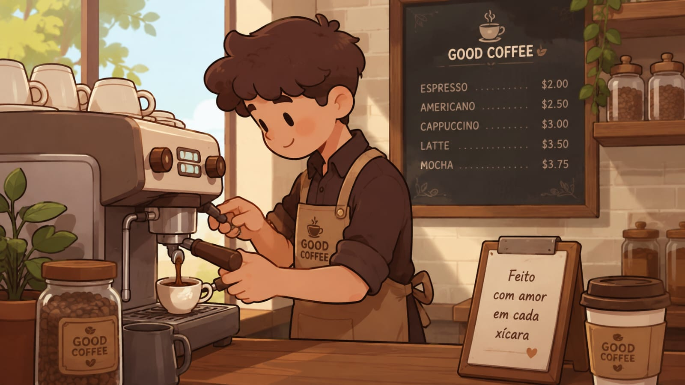
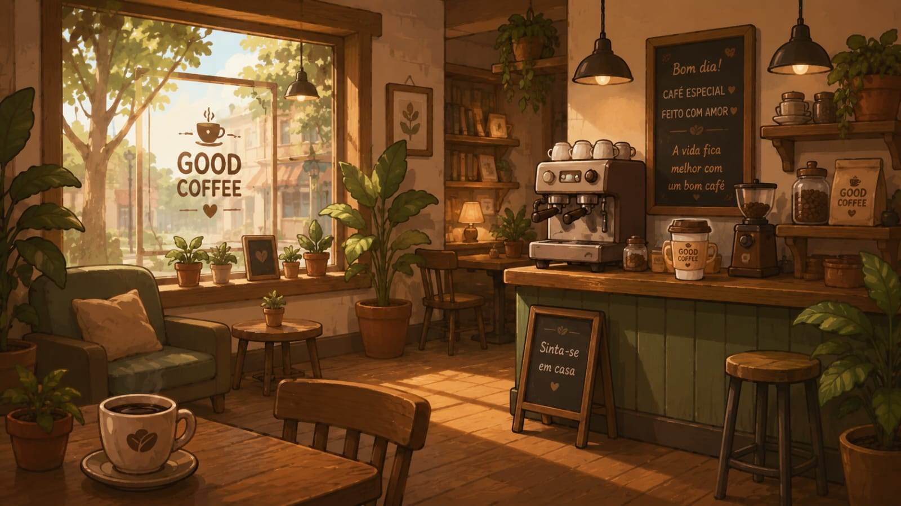

Somos uma cafeteria apaixonada pela cultura do café e pela criação de momentos especiais para cada cliente. Fundada em 2026, nossa missão é oferecer uma experiência única, unindo cafés de alta qualidade, ingredientes selecionados e um ambiente acolhedor que faz você se sentir em casa. Acreditamos que uma boa xícara de café vai além do sabor: ela conecta pessoas, inspira conversas e transforma pequenos momentos em grandes lembranças. Por isso, dedicamos atenção a cada detalhe, desde a escolha dos grãos até o atendimento, garantindo qualidade, conforto e satisfação em cada visita. Seja para começar o dia com energia, fazer uma pausa relaxante ou compartilhar bons momentos com amigos e familiares, nossa cafeteria está sempre de portas abertas para receber você.

Nossa equipe é composta por baristas experientes e entusiastas do café, que estão sempre em busca de novas técnicas e sabores para surpreender nossos clientes. Valorizamos a qualidade dos nossos produtos, utilizando grãos selecionados e métodos de preparo cuidadosos para garantir o melhor sabor em cada xícara.

Além de nosso compromisso com a excelência no café, também nos preocupamos com a sustentabilidade. Trabalhamos com fornecedores que compartilham nossos valores e buscamos constantemente maneiras de reduzir nosso impacto ambiental.
Agradecemos por escolher nossa cafeteria e esperamos que cada visita seja uma experiência memorável. Descubra o verdadeiro sabor do café conosco!